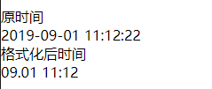

时间格式化
预览效果

主要代码
var formatTime = function(date, format = "") {
var y = date.substring(0, 4); // 年
var m = date.substring(5, 7); // 月
var d = date.substring(8, 10); // 天
var h = date.substring(11, 13); // 时
var _m = date.substring(14, 16);// 分
var s = date.substring(17, 19); // 秒
//获取有几个 y
var yC = (format.split('y')).length - 1
//输出的年份
var rY = y.substring(y.length - yC, y.length);
//创建yC长度的y字符串 来替换成rY长度的年份
format = format.replace(createStr("y", yC), rY)
.replace("MM", m) // 月
.replace("dd", d) // 天
.replace("HH", h) // 时
.replace("mm", _m)// 分
.replace("ss", s) // 秒
return format;
}
var createStr = function (s, c) {
var r = "";
for (var i = 0; i < c; i++) {
r += s;
}
return r;
}
module.exports = {
formatTime: formatTime
}
使用
<!-- 引用 -->
<!-- <wxs src="tools.wxs" module="tools" /> -->
<!-- 使用 -->
<!-- <view>{{tools.formatTime(time,"MM.dd HH:mm")}}</view> -->